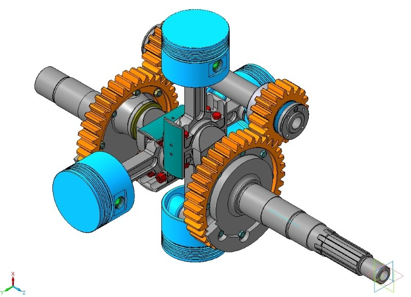
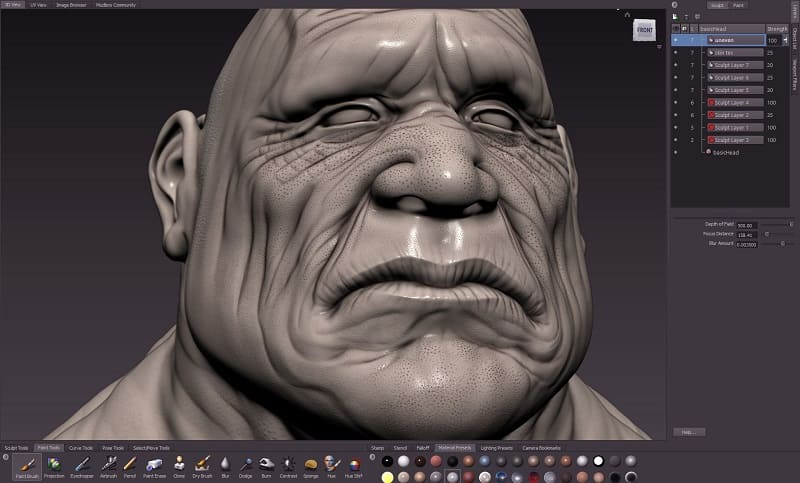

Архитектурные формы зданий изначально рождаются в воображении архитектора в виде гармоничных и прекрасных трехмерных образов. История развития архитектуры доказывает, что авторы зданий всех исторических периодов превосходно владели средствами 3D моделирования, безупречно точно перенося монументальные идеи на плоскости чертежей. Просто невозможно возвести строение без понимания и виртуозного оперирования такими элементами трехмерного проектирования, как форма и объем, плоскости и разрезы. Создание 3D архитектурных моделей, пусть даже на примитивном уровне, требует знания основных свойств материалов и полного понимания строительных технологий.
Появление современного компьютера и программного графического комплекса позволяет создавать любые трехмерные модели в архитектурном проектировании. Такой инструментарий дает просто безграничное пространство для творчества архитекторов, дизайнеров, кинопродюссеров.
3D технологии стали для нас привычными. Мы пользуемся ими в повседневной жизни, мы любим развлечения на основе трехмерных симуляций, и мы уже начали обучаться в виртуальной трехмерной среде.
Так давайте разберемся, как с помощью ПО для 3D моделирования вы сможете спроектировать и визуализировать все свои мечты!
Сферы использования 3D моделирования
Согласитесь, сейчас совершенно невозможно даже представить современную архитектуру без трехмерного проектирования и визуализации самых разных объектов. Помимо традиционного применения, эти технологии уже сделали шаг в будущее – в области «3D печати» домов.
Все проекты должны иметь не только, двухмерные чертежи, разрезы, виды, но и полноценный раздел 3D моделирования фасадов и интерьеров.
Разрабатывая, скажем, фасады зданий в программах 3D, архитектор имеет возможность создать виртуальную модель и привязать ее к конкретному участку на местности. Все объекты создаются из выбранной фигуры, которая находится в составе набора примитивов программы 3D моделирования. Библиотека примитивов настолько обширна, что вполне позволяет с помощью необходимого модификатора создавать любую модель реального мира.
Используя геодезические съемки, программа трехмерного проектирования в автоматическом режиме выводит на принтер чертежи генпланов и профили дорог и площадок с красными отметками. Это позволяет сократить сроки разработки и снизить ее себестоимость.
Современный трехмерный дизайн любого пространства позволяет сформировать полноценное представление о расстановке мебели, систем отопления, электропроводки, светильников, выключателей, вида остекления и заполнения проемов. Такой подход минимизирует ошибки в плане строительства, отделки и декорирования. Вы видите еще не построенное здание как на ладони, оно уже почти существует!
3д модели объектов растительного и животного реального мира создают как бы виртуальную реальность, где вы можете уже сейчас наслаждаться тем, насколько прекрасен будет ваш сад или насколько стильно будет выглядеть прилегающая территория вашего бизнеса. Определяя место физического объекта в 3D пространстве, можно запроектировать и весьма точно реализовать даже сложнейшие инновационные идеи в области строительства, декорирования, а также в ландшафтном дизайне.
Передовые, самые инновационные разработки в сфере 3D принтеров позволяют буквально печатать дома из цемента. Строительные 3D принтеры пока не совершенны и имеют довольно высокую стоимость, они чувствительны к перепадам погодных условий, требуют прямо-таки трепетного к себе отношения. Они не допускают перерывы в поставке бетонной смеси и не дружат с арматурным каркасом. Монтаж перемычек и перекрытий выполняется дополнительной техникой. Но дома по этой технологии возводятся в рекордно короткие сроки и могут иметь невероятно причудливый дизайн. Естественно, «напечатать» такой дом будущего совершенно нереально без предварительного проектирования в совместимой 3D программе.
Область применения 3D моделирования не ограничивается архитектурой, строительством и благоустройством.
3D-моделирование - это основа современного игрового и мультимедийного пространства.
Еще несколько лет назад трехмерный фантастический фильм был вершиной мастерства в киноиндустрии. Сейчас фильмы, мультфильмы и игры 3D превратились в нечто само собой разумеющееся. Создание трехмерных героев для кино и VR игр – это огромный прибыльный бизнес.
Трехмерные модели широко применяются в рекламе. Причем для их создания используют не только редакторы для моделирования, но и программу Adobe Photoshop.
Самое передовое направление в области VR и трехмерного моделирования пространства – это обучающие симуляции, позволяющие быстро и безопасно готовить специалистов в разных областях. Эту технологию внедряют даже для подготовки кондукторов, проверяющих билеты в автобусах!
3D моделирование в промышленности
В составе САПР (Система Автоматического проектирования) 3D-моделирование может производиться опционально.
Наиболее технологичным и часто применяемым программным комплексом для моделирования считается 3D Max Autodesk.

Графические редакторы этой компании (Maya, Autocad и Mutbox) не имеют конкурентов в три-де моделировании. Таких результатов Autodesk добился, проводя политику доступности программного комплекса для студентов. <> Компания-разработчик предусмотрела специальную трехгодовую лицензию для студентов, позволяющую полноценно освоить ПО и отточить навыки работы с ним. Естественно, программы 3D MAX являются мультилингвальными – поддерживают разные языки, в том числе и русский язык.
Как производится 3D моделирование для промышленных целей
Промышленное 3Д моделирование выполняется всегда на основании технического задания (ТЗ) выданного заказчиком. Включая в задание раздел трехмерное моделирование, заказчик указывает степень деталировки и количество вариантов с разными текстурами или цветом.
Осуществляя трехмерное моделирование объектов, проектировщик дает представление как об отдельных моделях деталей, так и о позиционировании и функционировании их в составе комплекса-изделия. 3D модели комплектующих, находясь в составе рабочего проекта, показывают итоговый вариант готового продукта (экстерьер или интерьер).
Проектированием инженерных систем в программах 3D моделирования решается задача автоматизации трудоемких процессов, например, таких, как создание рабочих чертежей линейно вытянутых объектов.
Средствами 3D-моделирования производится конструирование и тестирование деталей разнообразных устройств, механизмов, в том числе высокотехнологичных. Распечатав их на принтере в натуральную величину и оттестировав, конструкторы могут приступать к заводскому производству. <> Трехмерные технологии остро востребованы в автомобильной промышленности, где создаются 3D модели не только деталей, но и корпуса машин. Только так можно выпускать на рынок инновации и передовые решения – конструктивные и для целей автодизайна.
Огромный спрос на объемное 3D-моделирование наблюдается в фармацевтическом секторе и, особенно, в области протезирования. <> Современные протезы проектируются так, чтобы они прекрасно подходили анатомически и полноценно выполняли бы функции потерянных конечностей.
И, конечно, апогеем в промышленном 3D проектировании является упаковка. Тщательная проработка формы, функциональности и дизайна посредством 3д позволяет колоссально влиять на продажи товаров, а с ними на прибыль предприятий. Иногда превосходная упаковка (даже посредственных товаров) становится локомотивом продаж.
Этапы создания трехмерной модели
Фотореалистичность
3D проектировщик – это почти художник! В его работе необходим поиск фотореференсов и фиксация сцен естественной природы и окружения. Реалистичность сцен полезно сопоставлять с этими примерами. Образцы для моделирования и позиционирования выгодно подбирать еще до начала основных работ.
Кроме обеспечения натуральности, идентичности, поиск удачных примеров расширяет видение композиции и дарит вдохновение в работе!
Грамотный выбор необходимого программного обеспечения
Выбор технологии для 3D моделирования объектов реального или вымышленного мира зависит от используемого ПО. Разнообразие и специфичность программ для создания трехмерной модели, просто впечатляющее. Если требуется выполнить проект в 3D, соотнесите особенности выполнения и функционал программного обеспечения. Это поможет изначально сделать правильный выбор инструментария.
Например, если необходимо создать платье для модели человека, то в 3Ds max сложно выполнить развертку и наложить корректно текстуру на платье. Следовательно, это выполняется в программе, где инструменты 3D моделирования имеют такую возможность. Сложные проекты всегда выполняются с разделением труда на моделирование и визуализацию. Это связано с необходимостью иметь для этих работ большой объем специальных знаний и навыков. Заказанный проект должен быть выполнен качественно и в срок, поэтому крайне важно изначально работать с подходящим ПО.
Начинаем с 2D
Перед началом трехмерной разработки, как правило, выполняются детальные чертежи 2D. Например, этот этап обязателен перед моделированием в строительстве. Здания изначально проектируются в формате двухмерных чертежей с размерами, которые затем импортируются в программы, работающие с трехмерной графикой. Такой порядок подготовки позволяет избежать ошибок и неточностей, так как тот же 3Ds max лучше работает с готовыми полилиниями.
Импортировав чертежи 2D в программу для 3D, проектировщик настраивает папку проекта и присваивает текущее название. В папке проекта будут сохраняться резервные копии файла, референсы, дополнительные библиотеки материалов с текстурами, текстуры новых создаваемых программой материалов и дополнительные сцены для проекта. Такой порядок учета файлов выполняют программы для визуализации 3D моделей и прописывают пути их определения на дисках компьютера. Изменение места нахождения текстур или других файлов проекта приводит к потере их для программы. Требуется дополнительное действие для прописи путей поиска и мест расположения текстур и файлов.
Создав папку проекта в 3Ds max, выполняем сохранение основного файла в папку сцен. Маршрутизация и классификация проекта на этом завершены! Можно переходить непосредственно к работе с 3D.
Простое 3D моделирование выполняется в четырех проекциях
Эти проекции составляют рабочую среду программного обеспечения для 3D моделирования. Для навигации разработан качественный интерфейс, позволяющий быстро и эффективно переключаться между проекциями и получать доступ к инструментарию программы.
Основой для работы можно считать примитивы. Примитивы – это комплекс простых форм (бокс, сфера и т.д.). Набор примитивов в программе представляет собой некий конструктор для создания 3D моделей. Также есть необходимые модификаторы – инструменты для трансформации простых форм.
Используя простейшее, можно создать великое!
Для моделирования здания прямоугольной формы выбирается бокс. Применяя модификаторы, можно выполнить оконные и дверные проемы в стенах. Работа с нужными простыми формами, а также их модификация, собственно, и есть создание трехмерных 3D моделей в необходимом количестве и качестве.
В современных программах заложено достаточное количество инструментов для продвинутого моделирования.
Одним из основных инструментов считается полигональное моделирование. Используя точки, ребра и полигоны выполняется модификация любого примитива и придание необходимой формы модели. Выполнять такие трансформации требуется с использованием определенного порядка действий. Для этого необходимы знания правил программы полигонального моделирования. После выполнения модификации проверяется расположение ребер — так называемая сетка с четырьмя точками у каждого полигона.
При моделировании с использованием нескольких примитивов (стены + пол + потолок) тщательно проверяются точки их соприкосновения. Расположенные рядом точки необходимо «сварить» специальной командой. Максимально приближая места стыка, добиваются точного касания полигонов. Так получается единая, монолитная модель, без каких-либо «щелей» и прочих дефектов.
Отлично помогает в работе с моделями временная изоляция объекта в пространстве программы.
Обучение полигональному моделированию, как правило, следует строго после изучения интерфейса. Это в прямом смысле базис, необходимый для успешного освоения 3D технологий. По сути, этот навык дает практически безграничную свободу. Это важно даже при наличии огромного количества готовых качественных моделей.
Выполнение рендера
Собрав сцену из моделей, ставится задача отчитаться перед заказчиком рендером. Если требуется первичное согласование, то выполняется черновой рендер, дающий наглядное представление о проделанной работе, концепции проекта. Для финальной отчетности и для презентационных целей выполняется фото реалистичный рендер.
Визуализатор устанавливает и настраивает камеру под заданный ракурс. Если визуализируется ландшафтный проект, то устанавливаются несколько камер (общий план с птичьего полета или вид на входную группу). Особое внимание обращается на качественное освещение сцены.
Кроме освещения необходимо выбрать размер кадра финальной картинки. При необходимости вывода результата на печать задается размер бумаги (А1, А2, А3, А4) и размер фреймбуфера программы. Расчет необходимо выполнить сначала в сером цвете для постановки освещения. Если освещение сцены выполнено HDR картами и солнцем, то необходимо совместить их друг с другом для корректного падения теней. Самые простые в плане визуализации – это статические сцены (интерьер или экстерьер). Много времени занимает визуализация анимации различных сцен. Закончив просчет, выполняется сохранение и постобработка полученного результата.
Грамотный подход к моделированию, внимание к деталям и правильное ПО – залог, того что рендеры будут реалистичными и в соответствии с ТЗ заказчика.
Программное обеспечение
На сегодня разработано солидное многообразие программ для моделирования. Для детализации их можно разделить на несколько групп, согласно тем задачам, на которые это ПО ориентировано:
1. Максимально детальное отображение фактуры строительных материалов и конструкций 3D моделей зданий и сооружений (3Ds max Autodesk).
2. Максимально детальное выполнение рабочих чертежей 3D моделей зданий и сооружений, в том числе с расчетами нагрузок и размеров (BIM Building Information Modeling в Autodesk Revit).
3. Максимальная реалистичность моделей в киноиндустрии и играх (Maya Autodesk).
4. Цифровой скульптинг (Zush, Mudbox).
Компьютеры делятся по назначению:
1. Универсальные.
2. Специальные.
3. Для решения узкой задачи.
По мощности делятся:
1. Супер ЭВМ.
2. Большие.
3. Малые.
4. Микро ЭВМ.
Особое место в трехмерном моделировании занимает визуализация (получение реалистичной картинки).
Процесс формирования визуализации называется рендер (анл. глагол render – представлять, отображать, англ. rendering —визуализация).
Для рендера используются вспомогательные программы. Часть из них являются штатными в 3D программах. Успеха в этом направлении добились также и сторонние производители рендер программ. Особую популярность имеет Chaos Group, которая имеет две самые прогрессивные программы для рендера VRay и CORONA.

Независимо от вида используемой программы и ЭВМ создание модели для постановки сцены используют раздел программы:
1. Моделирования с применением необходимых модификаторов.
2. Шейдинга для назначения материалов на готовые модели.
3. Визуализация.
Чтобы грамотно выбрать ПО, необходимо полноценное и квалифицированное понимание ТЗ и всех этапов трехмерного моделирования. Вам понадобится проанализировать софт с точки зрения специфики и функционала, чтобы на выходе получить высшее качество.
Например, чтобы эффективно выполнить чертежи, софт нужен такой: 3Ds max, AUTOCAD и Adobe Photoshop. Это ПО обеспечит качество моделирования, рендеринга и соблюдение сроков сдачи работы заказчику.
В программе Autodesk AUTOCAD чертится 2d план объекта или здания в масштабе с указанием всех необходимых для 3D моделирования размеров. Иногда для аналогичных целей используются cad для 3D моделирования — типа Autodesk Revit или AUTOCAD 3D для архитекторов.
Когда выбрана программа для 3D моделирования, необходимо определиться с дополнительной программой для рендеринга. Это, как правило, дополнительный плагин (расширение), которое обязано полностью отвечать требованиям ТЗ по качеству визуализации и презентационным свойствам рендеров.
Существуют приложения, которые считаются лучшими для рендеринга: Iray, V-Ray, Arion, Oktane, Corona, Mental ray и Arnold. Все они имеют широкий функционал и дружелюбный интерфейс, который дает возможность визуализатору успешно выполнить финальный расчет.
Технологии визуализации постоянно совершенствуются
В настоящее время Corona вместе с Chaos Group выпустила модель программы за номером 3. За это время в ее составе появилась своя камера и светильники. Усовершенствовалась система назначения материалов при помощи своих процедурных карт. Простота рендера в реальном времени позволила ПО от Corona стать самым популярным для начинающих визуализаторов. Особенно это проявилось после создание мощной библиотеки материалов в составе самой программы. Слабым местом программ Corona – Chaos считается процесс преобразования сцен, созданных в V-Ray, в Corona и обратно. Из-за дефектов данного импорта-экспорта часто требуется корректировка материалов и освещения.
V-Ray от Chaos Group также серьезно продвинулся в плане развития ренедеринга. Поделившись своими наработками с Corona Render, Chaos Group выпустила V-Ray 5 и сразу вернула себе лидерство на рынке программ для визуализации. Созданные ранее библиотеки моделей для V-Ray разных моделей (начиная от 1.5 до 3.3) за десятилетия существования трехмерного моделирования корректны до настоящего времени. Сложные проекты визуализации выполняются только с материалами V-Ray Chaos Group. Основной причиной появления новых визуализаторов считается моральное устаревание материалов и рендера, созданного в составе основной программы.
Создатели 3Ds max также предусмотрели собственные библиотеки материалов (Autodesk). Существует довольно прогрессивный порядок присвоения (назначения) конкретного материала той или иной модели – эта технология стала новым витком развития уже имеющейся.
Начиная с 1997 года, появляется в продаже редактор трехмерной графики 3D Studio Max 2 имеющий в составе все современные блоки интерфейса.
Autodesk ежегодно выпускает новую версию программы в двух вариантах— 3Ds Max и 3Ds Max Design. Первый вариант предназначен для специалистов в области моделирования. Второй вариант программы используется дизайнерами и архитекторами.